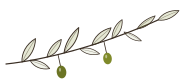

O mně
Tereza Kasalová, průvodkyně italštinou
Absolvovala jsem magisterské studium italianistiky na Filozofické fakultě Univerzity Karlovy a během studijního pobytu na Sapienza Università di Roma jsem žila deset měsíců v Římě. Itálie mě naučila všímat si krásy a radovat se z maličkostí – a právě tuhle zkušenost vám chci předat spolu s jazykem.


Jak mě Itálie naučila zpomalit
V Itálii jsem se nenarodila a nemám tam ani rodinu. Přesto si mě k sobě přitáhla. Věřím, že kořeny v Itálii mít nemusíte. Můžete si je tam zapustit sami v průběhu života a zvolit si Itálii za svůj druhý domov.
Studium italianistiky jsem si vybrala, protože mě to k italštině nevysvětlitelně táhlo. Během studia jsem žila deset měsíců v Římě. Pamatuji si na moment, kdy jsem se tam začala cítit jako doma, akorát víc svobodná, víc živá, víc svá. Poprvé v životě jsem byla opravdu sama sebou. Životnímu stylu, který jsem tam objevila, jsem začala říkat vita lenta.
Přála bych si, abyste v Itálii zažili, jaký je to pocit, když vás náhodný člověk pochválí, že mluvíte skvěle italsky. Proto učím tak, aby vám italština sloužila tam, kde ji opravdu potřebujete: u snídaně v baru, u sousedů, při domluvě s řemeslníkem.
Baví mě Itálie celá: emoce naplno, gesta, hádky kvůli drobnostem, jiná mentalita. Hodiny připravuji na míru a nejraději mám chvíli, kdy mi řeknete, že jste se v Itálii úspěšně domluvili a už jste nemuseli spoléhat na překladač v mobilu ani na domluvu rukama nohama.
Těším se, až se poznáme.
Poznejme se při hovoru
Ujasníme si, jaké jsou vaše cíle v italštině. Patnáct minut, bez poplatku a bez závazku.
Nebo napište na ciao@vitalenta.cz. Ozvu se vám co nejdříve.